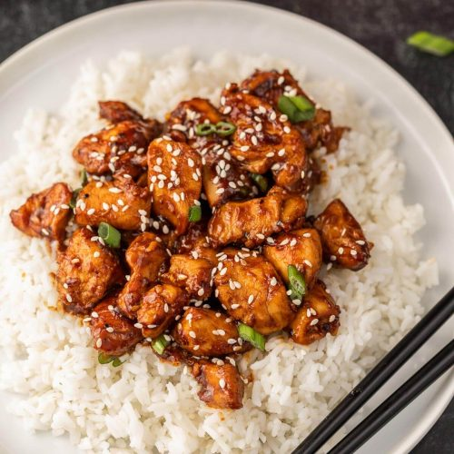

Hoisin Chicken

Description
Hoisin chicken is a popular Chinese chicken stir fry dish and Hoisin sauce is the key component of this dish. It has a unique sweet and savoury taste and is loaded with authentic flavour.
Ingredients
- Chicken
- Hoisin souce
- Vegetables
- Fresh Herbs
- Soy sauce
- Sesame oil
- Cornstarch
- Cooking oil
Steps
- Marinate the chicken: In a bowl, combine chicken with light soy sauce, baking soda, rice vinegar, corn starch, and baking soda. Allow it to marinate for 10-15 minutes. This marination keeps the meat moist and tender.
- Prepare sauce: Add hoisin sauce, light soy sauce, dark soy sauce, rice vinegar, water, cornstarch, sugar, and sesame oil in a small bowl. Whisk until sugar is dissolved.
- Heat the pan: Heat a large wok or a skillet over medium-high heat. Drizzle a tablespoon of cooking oil and swirl it around to coat the bottom evenly.
- Sear the chicken: When the oil is hot and shimmering, add the marinated chicken to the wok or skillet. Spread it out in a single layer to ensure proper searing. Let it cook undisturbed for 1-2 minutes, allowing it to develop a nice sear. Then, flip and stir-fry the chicken until it's no longer pink. Remove the chicken from the wok and set it aside.
- Cook the vegetables: Drizzle another tablespoon of oil into the wok. Toss in onions and follow with the minced garlic, ginger and crushed chillies, stirring constantly for about 30 seconds or until they become fragrant. Then, add the bell pepper and stir-fry for a minute or two, until they're are tender-crisp.
- Combine: Pour the prepared sauce in. Return the cooked chicken to the wok and combine it with the vegetables. Stir everything together until the sauce thickens and coats the chicken and vegetables evenly. Finish with spring onions and make a final quick toss. Remove from heat and serve immediately.
Home